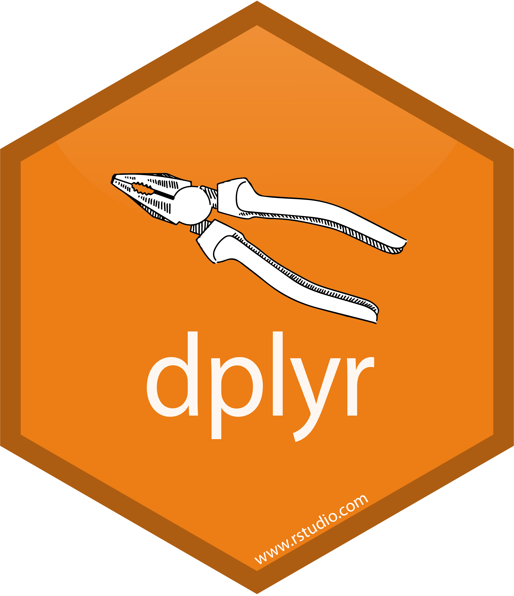
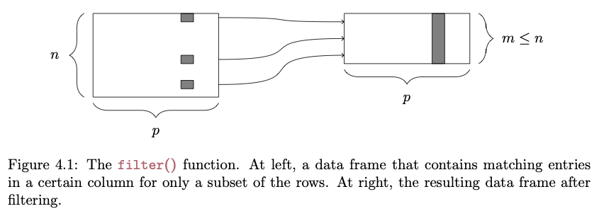
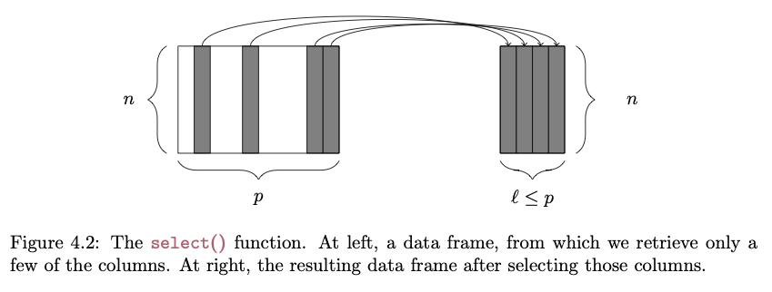
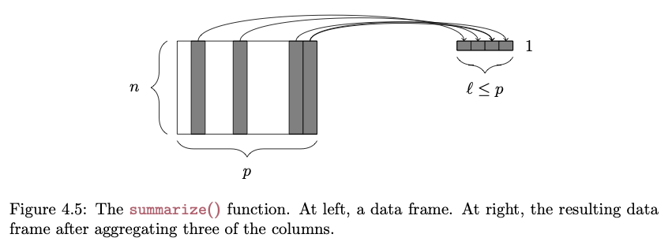
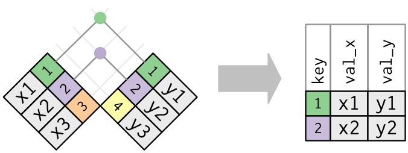
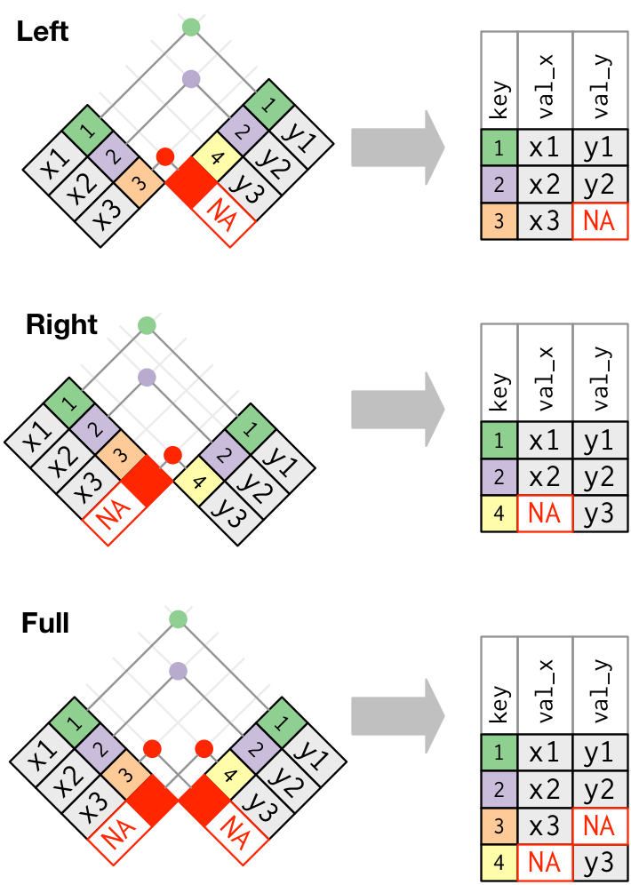
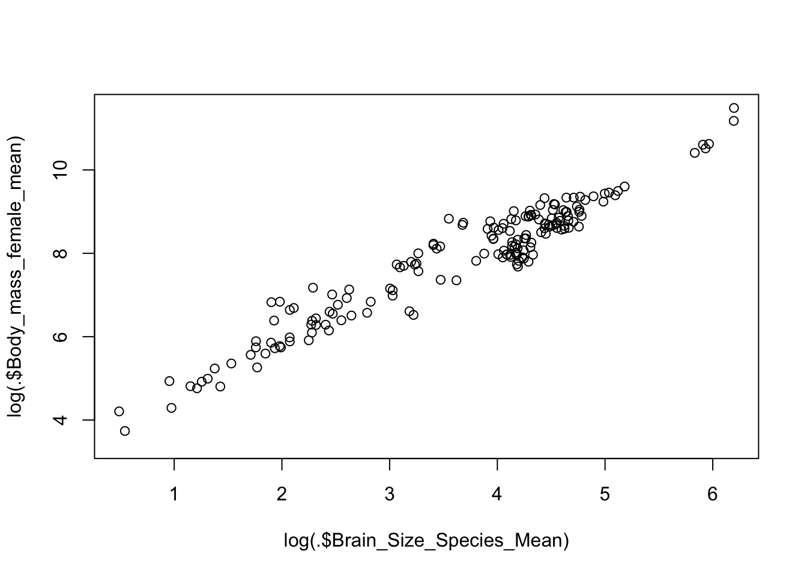

Load in the KamilarAndCooper dataset we used in Module 09 as a “tibble” named d
f <-"https://raw.githubusercontent.com/difiore/ada-2022-datasets/main/KamilarAndCooperData.csv"d <-read_csv(f, col_names =TRUE) # creates a 'tibble'head(d)
The {dplyr} package, included in the {tidyverse}, provides “a flexible grammar of data manipulation” that makes many of the manipulations that we explore in Module 07 and Module 09 much easier and muchmore intuitive!

Among other functions, {dplyr} introduces a set of verbs (filter(), select(), arrange(), rename(), mutate(), summarize(), and group_by()) that can be used to perform useful operations on “tibbles” and related tabular data structures (e.g., normal data frames and data tables). Before using {dplyr} for summarizing data and producing aggregate statistics, let’s look in general at what we can do with these verbs…
filter()
The filter() function lets us pull out rows from a data frame that meet a particular criterion or set of criteria:

FROM: Baumer et al. (2017). Modern Data Science with R. Chapman and Hall/CRC.
# selecting rows..s <-filter(d, Family =="Hominidae"& Mass_Dimorphism >2)head(s)
NOTE: The first argument of any of the {dplyr} verbs is the .data argument. That is the line of code above is equivalent to s <- filter(.data = d, Family == "Hominidae" & Mass_Dimorphism > 2)
select()
The select() function lets us pull out only particular columns from a data frame:

FROM: Baumer et al. (2017). Modern Data Science with R. Chapman and Hall/CRC.
# selecting specific columns...s <-select(d, Family, Genus, Body_mass_male_mean)head(s)
The {dplyr} package makes it easy to summarize data using more convenient functions than the {base} function aggregate(), which we looked at in Module 09. The summarize() function specifies a list of summary variables that will appear in the output, along with the operations that will be performed on vectors in the data frame to produce those summary variables:

FROM: Baumer et al. (2017). Modern Data Science with R. Chapman and Hall/CRC.
s <-summarize( d,n_cases =n(),# the n() function from {dplyr} returns the number of rows in the data frameavgF =mean(Body_mass_female_mean, na.rm =TRUE),avgM =mean(Body_mass_male_mean, na.rm =TRUE))s
Additionally, the group_by() function allows us to construct these summary variables for sets of observations defined by a particular categorical variable, as we did above with aggregate().
byFamily <-group_by(d, Family)s <-summarise( byFamily,n_cases =n(),# here, n() returns the number of rows in the group being consideredavgF =mean(Body_mass_female_mean, na.rm =TRUE),avgM =mean(Body_mass_male_mean, na.rm =TRUE))s
ungroup() - clears group metadata from a table put in place group_by()
bind_rows() and bind_cols() - adds rows and columns, respectively, to a dataframe or tibble; when binding rows, if the column names do not match, the column will still be added and missing values filled with NA; when binding columns, the number of rows in each dataframe needs to be the same
pull() - pulls a single variable out of a dataframe as a vector
sample_n() - randomly samples a set of “size=” rows from a dataframe with (“replace=TRUE”) or without (“replace=FALSE”) replacement; this function is being superceded in favor of slice_sample(), where an additional argument (n= or prop=) allows you to specify the number or proportion of rows, respectively, to sample randomly
drop_na() - drops rows from a dataframe that have NA values for any variable names passed as arguments to the function
rowwise() - allows you to explicitly perform functions on a data frame on a row-at-a-time basis, which is useful if a vectorized function does not exit
A full list of {dplyr} functions and their descriptions is available here.
10.5 Joining Tables
One of the other major forms of data wrangling that we often need to do is to combine variables from different tabular data structures into a new table. This process is often referred to as performing a “mutating join” or simply a “join”.
NOTE: For those with experience with other database systems, it is related to the “JOIN” commands in SQL.
The process works by matching observations in two different tables by a common key variable and then selecting additional variables of interest to pull from each of the tables. A simple example is the following… suppose we have two tables, one that contains average brain sizes for particular species of primates and one that contains individual body sizes for some of the same species, plus others. In the latter table, too, we may have data from multiple individuals of the same species represented.
An inner join or equijoin matches up sets of observations between two tables whenever their keys are equal. The output of an inner join is a new data frame that contains all rows from the left-hand (x) and right-hand (y) tables where there are matching values in the key column, plus all columns from x and y. If there are multiple matches between the tables, all combination of the matches are returned. This is represented schematically below:

FROM: Wickham & Grolemund (2017). R for Data Science. O’Reilly Media, Inc.
While an inner join keeps only observations that appear in both tables, different flavors of outer joins keep observations that appear in at least one of the tables. There are three types of outer joins:
A left join returns all rows from the left-hand table, x, and all columns from x and y. Rows in x with no match in y will have NA values in the new columns from the y table. If there are multiple matches between x and *y, all combinations of the matches are returned.
A right join returns all rows from the right-hand table, y, and all columns from x and y. Rows in y with no match in x will have NA values in the new columns from the x table. If there are multiple matches between x and y, all combinations of the matches are returned.
A full join returns all rows and all columns in both the left-hand (x) and right-hand (y) tables, joining them where there are matches. Where there are not matching values, the join returns NA for the columns from table where they are missing.
The following figure shows a schematic representation of these various types of outer joins:

FROM: Wickham & Grolemund (2017). R for Data Science. O’Reilly Media, Inc.
There are also two additional join types that may be sometimes be useful… note that these joins only return columns from the left-hand table, x.
A semi_join returns rows from the left-hand table, x, where there are matching values in y, but keeping just the columns from x. A semi_join differs from an inner_join because an inner_join will return a row of x for every matching row of y (so some x rows can be duplicated), whereas a semi_join will never duplicate rows of x.
An anti_join returns all rows from the left-hand table,x where there are not matching values in y, keeping just the columns from x.
The cheatsheet on Data Transformation with {dplyr} provides a nice overview of these and additional data wrangling functions included the {dplyr} package.
10.6 Chaining and Piping
One other cool thing about the {dplyr} package is that it provides a convenient way to chain together operations on a data frame using the “forward pipe” operator (%>%). The %>% operator basically takes what is on the left-hand side (LHS) of the operator and directly applies the function call on the right-hand side (RHS) of the operator to it. That is, it “pipes” what is on the LHS of the operator directly to the first argument of the function on the right. This process allows us to build of chains of successive operations, each one being applied to the outcome of the previous operation in the chain.
The forward pipe is useful because it allows us to write and follow code from left to right (as when writing in English), instead of right to left with many nested parentheses.
CHALLENGE:
In one line of code, do the following:
Add a variable, Binomial to our data frame d, which is a concatenation of the Genus and Species…
Trim the data frame to only include the variables Binomial, Family, Body_mass_female_mean, Body_mass_male_mean and Mass_Dimorphism…
Group these variables by Family…
Calculate the average value for female body mass, male body mass, and mass dimorphism (remember, you will need to specify na.rm = TRUE…)
And arrange by decreasing average mass dimorphism.
There are several other, very cool, “special case” pipe operators that are useful in particular situations. These are available from the {magrittr} package. [Actually, the functionality of the forward pipe operator also comes from the {magrittr} package, but it is replicated in {dplyr}.]
The “tee” pipe (%T>%) allows you to pipe the outcome of a process into a new expression (just like the forward pipe operator does) and to simultaneously return the original value instead of the forward-piped result to an intermediate expression. This is useful, for example, for printing out or plotting intermediate results. In the example below, we filter our data frame for just observations of the genus Alouatta, print those to the screen as an intermediate side effect, and pass the filtered data to the summarise() function.
s <-filter(d, Genus =="Alouatta") %T>%print() %>%summarise(avgF =mean(Body_mass_female_mean, na.rm =TRUE))
The “assignment” pipe (%<>%) evaluates the expression on the right-hand side of the pipe operator and reassigns the resultant value to the left-hand side.
s <-filter(d, Genus =="Alouatta")s %<>%select(Genus, Species)s
Normally, when we use the forward pipe operator, the LHS of the operator is passed to the first argument of the function on the RHS. Thus, the following are all equivalent:
s <-filter(d, Genus =="Alouatta")s <- d %>%filter(Genus =="Alouatta")d %>%filter(Genus =="Alouatta") -> s
The behavior of the forward pipe operator means we can use it do something like the following, where d is implicitly piped into the data argument for ggplot()
d %>%ggplot(aes(x =log(Body_mass_female_mean), y =log(Brain_Size_Species_Mean))) +geom_point()
We can also use dot (.) syntax with the {magrittr} forward pipe operator to pass the LHS of a statement to somewhere other than the first argument of the function on the RHS. Thus…
y %>% function(x, .) is equivalent to function(x, y)
… which means we can do something like this to pipe d into a function such as lm() (“linear model”), where the data frame that the function is run on is not the first argument:
d %>%lm(log(Body_mass_female_mean) ~log(Brain_Size_Species_Mean), data = .)
We can also use the {magrittr} pipe’s curly brace ({}) syntax to wrap the RHS of a statement and pass the LHS into several places:
d %>% {plot(log(.$Brain_Size_Species_Mean), log(.$Body_mass_female_mean)) }

NOTE:R recently introduced a “native” pipe operator |> into its {base} syntax. It behaves very similarly to the {magrittr} forward pipe, but does not support dot syntax the same way. It also requires an explicit functions call on the RHS, which means appending () to the end of the function name, rather than just using the name. The first version of the line below using %>% could be used to take the log of all Brain_Size_Female_Mean values in d, while the second version, using |>, needs to have () appended to the functions calls to work properly.
d %>%select(Brain_Size_Female_Mean) %>% log %>% head
The {tidylog} package provides wrappers around many {dplyr} and {tidyr} package functions that provide logged feedback on the outcome of those functions, which can be useful for understanding the effects of whatever data wrangling processes we run. For example, running filter() will provide feedback on the number of runs removed and kept as part of a filtering operation…
NOTE: Loading in {tidylog} function will conflict with or “mask” corresponding function names from {dplyr} and {tidyr}. In the examples above, then, to run the {tidyverse} versions of filter() and select_n(), it was necessary to use the :: notation to specifically call the {dplyr} version of the functions directly. The {tidylog} versions of these functions run a bit more slowly, so if speed is important, you may not want to use {tidylog}, you may want to call the {dplyr} or {tidyr} functions explicitly after loading {tidylog}, or you may want to simply call the {tidylog} version of a function explicitly.
s <- tidylog::filter(d, Family =="Hominidae"& Mass_Dimorphism >2)